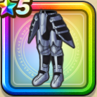

鎧の魔剣(鎧下)
攻略班 6.5点 / 混乱耐性+5%じゅもん耐性+2%混乱耐性+5%【バトマス】スキルの斬撃ダメージ+2%ドルマ属性斬撃・体技ダメージ+5%
くわしい特徴
【レベル別習得スキル】 Lv1混乱耐性+5% Lv8さいだいMP+5 Lv10じゅもん耐性+2% Lv12【バトマス】スキルの斬撃ダメージ+2% Lv15ドルマ属性斬撃・体技ダメージ+5% Lv18混乱耐性+5% Lv20【バトマス】守備力+5 Lv23きようさ+7 Lv25すばやさ+5 【限界突破スキル】 1凸攻撃力+5 2凸守備力+5 3凸すばやさ+7 4凸さいだいHP+10